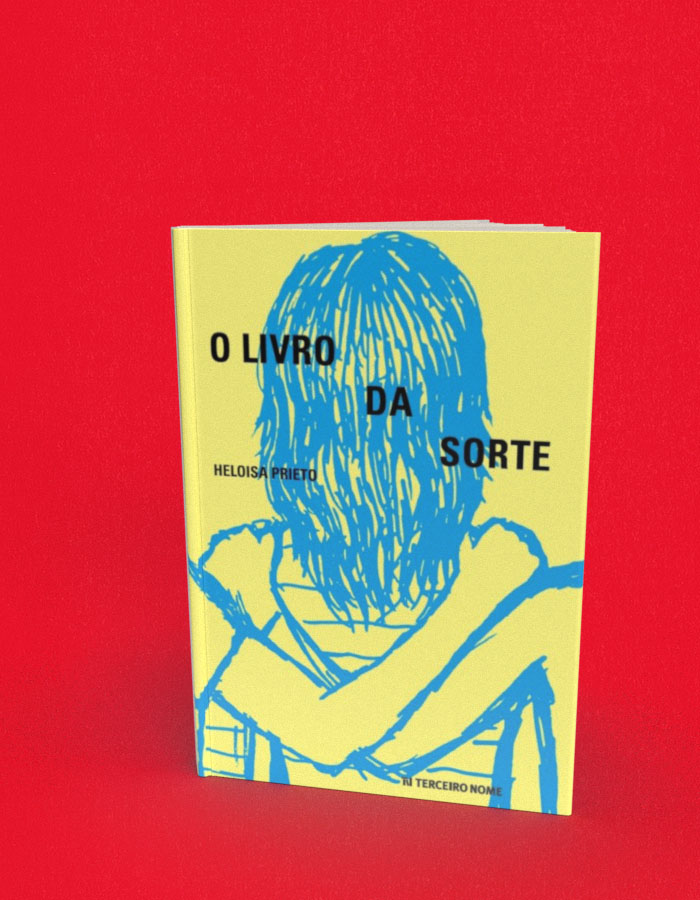

O livro da sorte
A compra acontece no site da livraria, em uma nova aba. Consulte lá os preços e a disponibilidade. Procure pelo título ou ISBN deste livro.
- Autoria / créditos
- Heloisa Prieto
- ISBN
- 9788578161361
- Páginas
- 108
- Formato
- 14 cm x 19,5 cm
- Acabamento
- brochura
Sobre o livro
Dadá é uma adolescente de 17 anos que vê sua vida virar de cabeça para baixo após a morte do pai. Em meio à tristeza e ao sofrimento, ela passa a escrever pensamentos e impressões e as troca com Rosana, sua melhor amiga. A escrita ajuda Dadá a lidar com os sentimentos que afloram com a perda e a faz pensar sobre o significado da amizade.
Ao construir sua narrativa a partir da troca dos escritos entre Dadá e Rosana, a autora Heloisa Prieto levanta questões que permeiam a vida dos adolescentes, como a convivência com os amigos e com a família. O leitor então mergulha nos textos para entender as angústias e as descobertas da protagonista, que se vê às voltas com uma nova realidade e se pergunta, em meio a tantas mudanças, se realmente existe diferença entre a sorte e o azar.
Heloisa Prieto é apaixonada por livros desde a infância. Quando morava em Marília, interior de São Paulo, ouvia histórias da tradição local e se encantava com as lendas portuguesas, baianas e espanholas que lhe contavam. Iniciou sua carreira de escritora alguns anos depois, quando, já morando em São Paulo, contava histórias para crianças na Escola da Vila. Doutora em literatura francesa (USP) e mestre em semiótica (PUC-SP), tem mais de 50 obras de literatura infantojuvenil publicadas e coleciona prêmios, entre eles dois Jabutis. A série de livros Mano descobre, escrita em parceria com Gilberto Dimenstein, inspirou o filme As melhores coisas do mundo, dirigido por Laís Bodanzky. Seu livro Mil e um fantasmas, adaptado pela Cia. do Grito, recebeu o prêmio Alpha.
← Voltar ao catálogo